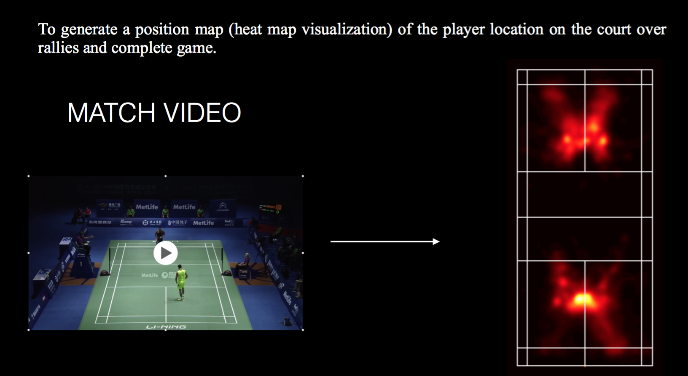
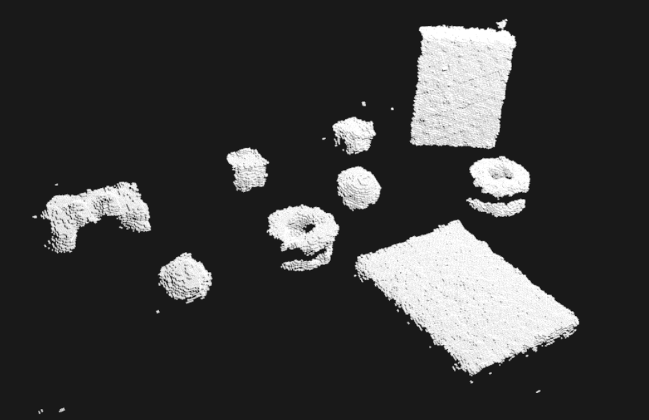

| 2018 | |
|---|---|
| Gradient Descent Based Sphere / Cone Detection Siddharth Patki RAIL Project details | |
| 2016 | |
|  | Tactical Analysis of the Game of Badminton Siddharth Patki Computer Vision Class Project pdf | details |
| Epidermis Tissue Segmentation in OCT Skin Images Siddharth Patki, Changsik Yoon Image Processing Class Project details | |
|  | Table Top Object Detection Siddharth Patki RAIL Project details |
 | Color Based Object Detection for Visual Servoing with Baxter Siddharth Patki RAIL Project details |
| Edge aware depth image smoothing for efficient surface normal estimation Siddharth Patki RAIL Project details | |